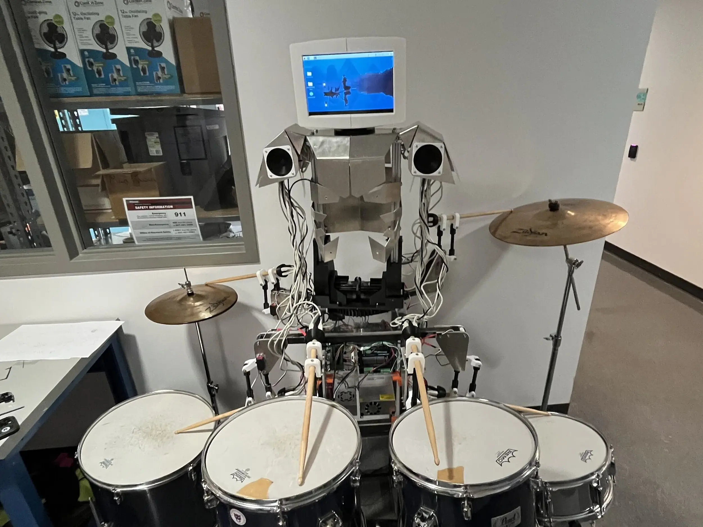
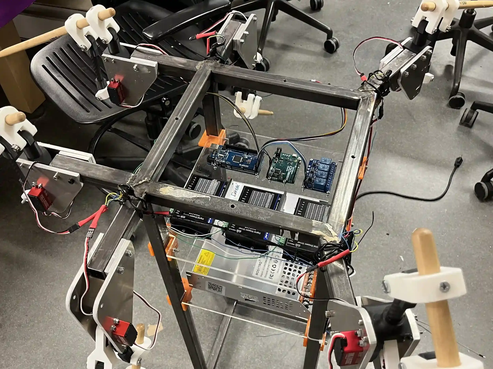

Electrical & Systems Integration
Integrated actuators and control systems for robotic drumming.

Overview
At the Northwestern University Robotics Club (NURC), I contributed to the drum robot on the Robotic Band subteam, focusing on the electrical systems and integration that enable MIDI-controlled playback.
The robot uses 6 servo motors to swing drumsticks, 3 stepper motors for torso movement, and a solenoid for the kick drum. The servo motors connect directly to the microcontroller, while each stepper motor is driven by a dedicated motor driver connected to the power supply and microcontroller. The solenoid was originally switched via a relay. When setting up the electronics, I designed the servo wiring to be modular so bad servos could be swapped out easily. The initial setup used an Arduino Uno and Arduino Mega, shown in Fig. 1 and the demo video in Fig. 2. We later migrated to a Teensy 4.1 (for it's native MIDI support and numerous pins) and replaced the relay with a transistor for more reliable kick drum actuation. I rewired the robot accordingly and designed an updated schematic in KiCAD, shown in Fig. 3.
Outside of the electrical work, I assisted with bending the sheet metal for the robot torso, shown in Fig. 4. With the torso installed, I integrated the stepper motors (as seen in Fig. 5), which allow the torso to tilt forward and backward and rotate, adding to the performance. Additionally, I configured a Raspberry Pi in the robot's head to play videos during performances.
At the end of the year, the drum robot gave its first performance at Northwestern's Kresgepalooza event in 2025, playing several Daft Punk songs alongside live musicians.
You can watch the performance of Get Lucky
in Fig. 6.
The next year, while working on the guitar robot, I also improved the drum robot's kicker mechanism and servo joint assemblies.
I designed a sheet metal mount that I water-jet and bent in the shop, then redesigned and reprinted the mount for the solenoids
with smoother geometric transitions, thicker walls, and slots for wire routing, shown in
Fig. 7. I incorporated fans to dissipate heat and adjusted the kicker position to
improve solenoid contact while avoiding resonant collisions during the swing, shown in Fig. 8. I also reprinted all servo joints with higher infill, additional fillets, and optimized layer orientation to improve strength against axial and shear loads. With these improvements, the drum robot performed with live musicians at Kresgepalooza 2026. I led the band's rehearsals and performed as lead guitarist. You can watch a segment of the Mr. Brightside
performance in Fig. 9.
Gallery

Fig. 1. A photo of the initial wiring setup for the drum robot, with servos, motor drivers, Arduinos, relays, and power supplies.